Arch Linux, fully configured for Intel MacBooks. Boot from USB and try everything before you install — LibreOffice, GIMP, Inkscape, Brave, the full terminal stack. No commitment, no cables, no terminal required.

Is DevOS for you?
If you've never used Linux before — don't start here. Go install Manjaro or Linux Mint first. Break things. Fix things. Learn why things work the way they do. That pain is not wasted — it's the foundation.
DevOS is for when you're past that. When you need a machine running on the absolute fly — no configuration marathon, no driver hunting, no half-working trackpad. Boot, install, work.
If that's you — welcome.
The numbers
Your MacBook deserves better than being put out to pasture.
The macOS Sequoia installer is 15.5 GB. It requires 25 GB of free space to install. And it won't even run on your MacBook.
Boot it from a USB stick in under a minute. Try everything — LibreOffice, GIMP, Brave, the full terminal stack. If you like it, install it. If you don't, pull the stick out and walk away. Nothing touched, nothing lost.
macOS Tahoe is the last version Apple will ever ship for Intel Macs. After that, your hardware is officially dead to them.
To us it's very much alive.
Install with confidence
Full disk encryption supported out of the box. Enable LUKS encryption with a single checkbox during install. Your data is yours.
Manual, automatic, or alongside an existing OS. Supports GPT and MBR, ext4, btrfs, xfs, and swap. The installer detects your existing partitions and won't touch anything you don't tell it to.
systemd-boot configured automatically on UEFI systems. Clean, fast, no grub bloat.
Root account locked by default. sudo via wheel group only. UFW firewall active. fail2ban running. sshd off. You're protected from minute one — not after a hardening checklist.
Installing an OS should feel safe. DevOS makes it feel safe.
What you get
A full developer environment, not a bare Arch install.
Composited with picom, xfdashboard overview on 4-finger swipe, Plank dock, WhiteSur-Light theme with Gruvbox-Plus-Dark icons. Fast, clean, and distraction-free.
Broadcom WiFi, Magic Trackpad 2, FaceTime HD camera, fan control, lid/clamshell handling, battery alerts — all working at first boot. No manual driver setup.
Brave, VS Code, Docker, Node 20, Python 3.14, Git, GitHub CLI, Paru AUR helper, PlatformIO. Real-time priority limits pre-configured for audio/embedded work.
Root locked, sudo via wheel only, UFW firewall, fail2ban, sshd off by default. Live password expires on first login — forces you to set a real one immediately.
Calamares installer with full DevOS branding. Click through location, keyboard, partitions, and user setup. Systemd-boot configured automatically. No terminal required.
Alacritty → tmux → zsh with Powerlevel10k. Word navigation, syntax highlighting, smart history. libinput-gestures for trackpad-driven workspace switching.
Interactive Demo
Click through the full Calamares GUI experience — no VM needed.
Apple MacBook
| Hardware | Driver / Method | Status |
|---|---|---|
| Broadcom BCM WiFi | broadcom-wl DKMS · conflicting drivers blacklisted | ✅ |
| Intel Iris Pro / HD | xf86-video-intel · TearFree · DRI3 | ✅ |
| Magic Trackpad 2 | hid-magicmouse DKMS · libinput pressure curves | ✅ |
| Magic Mouse 2 | hid-magicmouse DKMS · udev acceleration tuning | ✅ |
| FaceTime HD Camera | facetimehd DKMS | ✅ |
| Thunderbolt 2 | Native kernel support | ✅ |
| Fan / Thermal | mbpfan service | ✅ |
| Built-in Display Audio | Disabled at boot · prevents HDMI conflicts | ✅ |
| USB SuperDrive | udev rule 91-apple-superdrive.rules | ✅ |
| Clamshell / Lid | acpid handler · logind defer · external display handoff | ✅ |
| Battery Alerts | systemd user timer | ✅ |
| Suspend / Resume | acpid + tlp | ✅ |